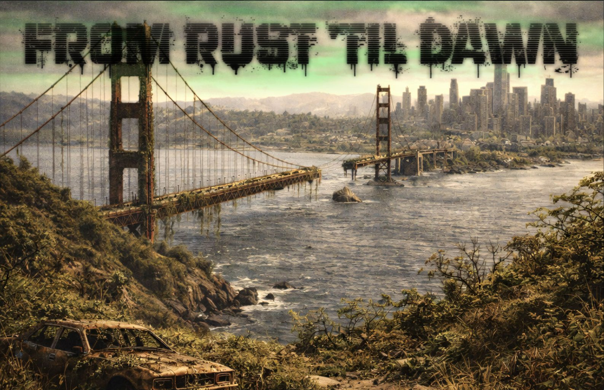
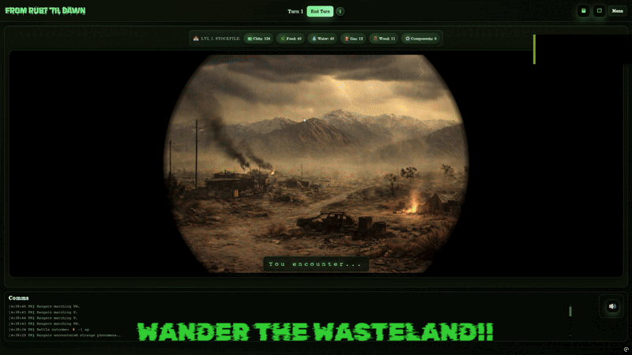
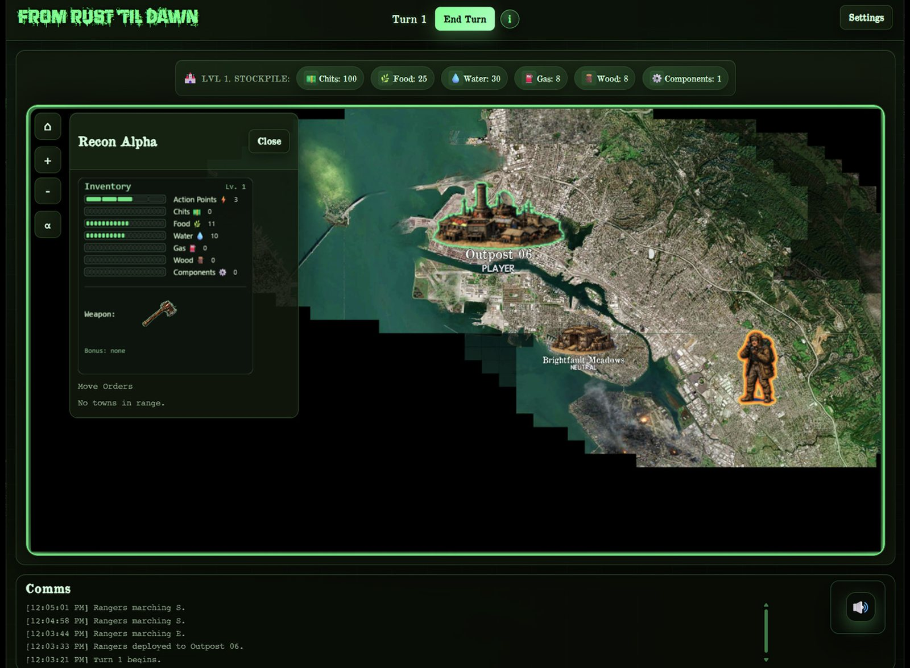
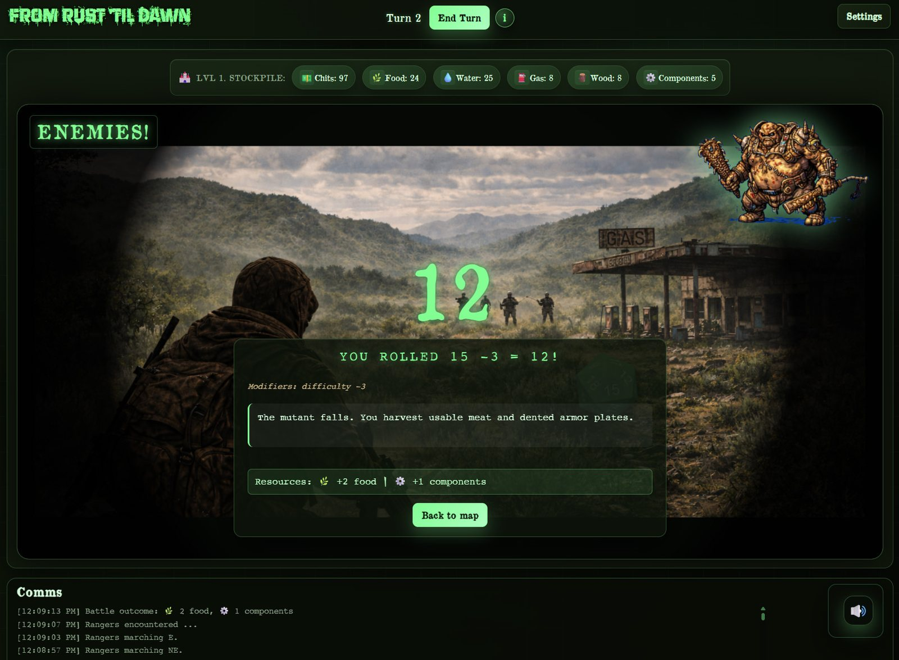
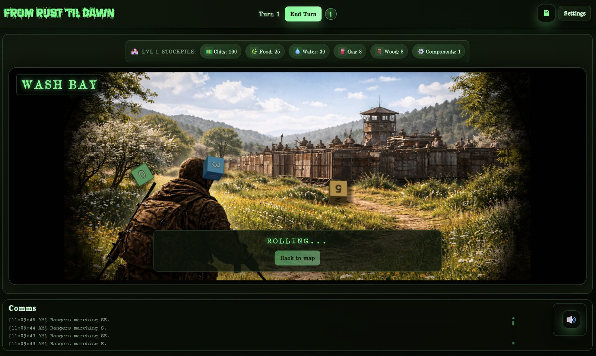
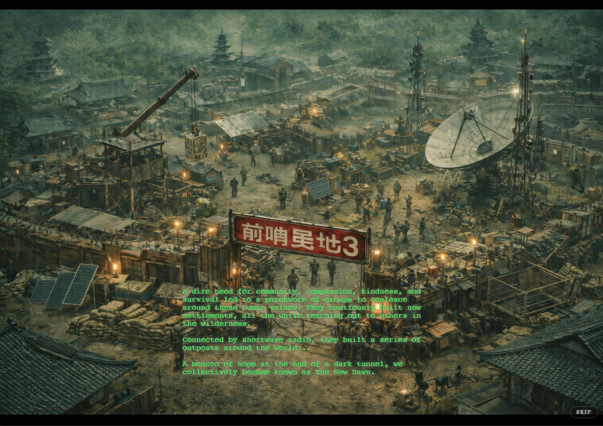

Darwin Studio presents
From Rust 'Til Dawn
roll to survive
This is the story of Outpost 06, in what remains of Oakland, California. Send your rangers out across the wasteland, scavenge food, water, gas and parts, roll the dice on every encounter, and push east toward the Great Dams before your stockpile runs dry.
From Rust 'Til Dawn is free. If it eats a few of your evenings and you'd like to say thanks, you can buy me a coffee. It keeps me (the developer) going, and also helps cover catnip costs for the resident studio cats. We appreciate it!


Play it
From Rust 'Til Dawn 0.9146
Play it right here in the browser, or download it for Windows (recommended). Same game either way. It's also on itch.io.
Browser: a recent Chrome, Edge or Firefox on a desktop or laptop; saves stay in that browser. Windows: Windows 10 or 11, 64-bit. Post your high score on r/FromRustTilDawn.
Screenshots
Out in the wasteland





Install
Running it on Windows
The game isn't signed by a registered Microsoft developer yet, so Windows asks once before running it.
Windows
- Download the zip and unzip it anywhere, for example your Documents folder.
- Open the folder and run
From Rust Til Dawn.exe. - If Windows SmartScreen appears, click More info, then Run anyway.
- To remove: delete the folder.
Credits
- Developed by Darwin Studio, NYC, 2025–26.
- Music by Inter Alia, Chronicles of the Lair and The Submarine Chronicles, from Tone Den Records and Hisstology Records, under CC BY-NC 4.0.
- Satellite imagery courtesy of Copernicus/ESA.